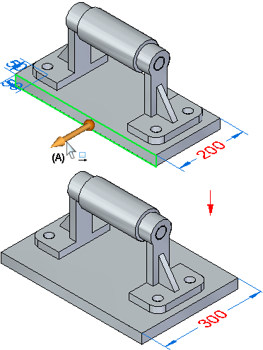

Editing parts from the assembly
When working in an assembly, you can perform a subset of part editing operations from the assembly document. For example, after setting the select tool criteria to face priority Selection options menu, you can use the steering wheel (A) to move a part face while working in the assembly document.

Some types of editing operations require you to in-place activate or open the part document first.
After setting the select tool criteria to face priority on the Selection options menu, you can perform the following types of synchronous part editing operations while working in the assembly:
-
Move model faces and features with the steering wheel.
-
Edit dimensions.
-
Use the Relate command to define a relationships between faces.
-
Edit elements in a Live Section.
-
Perform certain types of feature definition edits.
After setting the select tool criteria to face priority on the Selection options menu, you can perform the following types of ordered part editing operations while working in the assembly:
-
Protrusion
-
Revolved protrusion
-
Revolved cutout
-
Hole, Thread
-
Round, Blend, Chamfer
-
Draft
-
Thin wall, Rib, Web network, Lip, Vent, Mounting boss.
-
Sweep, Loft, Helix, Normal (Add and Cut).
-
Pattern, Curved pattern, Mirror Copy feature, Mirror copy part.
-
Move face, Rotate face, Delete face, Delete round, Delete hole, Resize round and Resize hole.
-
Surface and curves
-
Planes and sketches.
-
Simplified features.
After setting the select tool criteria to face priority on the Selection options menu, you can perform the following types of ordered sheet metal editing operations while working in the assembly:
-
Flange, Counter flange, Hem
-
Dimple, Louver, Drawn cutout, Bead, Gusset, Cross brake Etch.
-
Hole
-
Cut, Normal cutout
-
Bend, Unbend, Re-bend, Jog
-
Break corner, Chamfer
-
Move model faces and features with the steering wheel.
-
Edit dimensions.
-
Use the Relate command to define a relationships between faces.
-
Edit elements in a Live Section.
-
Perform certain types of feature definition edits.
When editing an ordered feature from an assembly, in-place activation occurs automatically. After the edit is complete, you must click close and return to save the changes and return to the assembly.
Modification of components by Dynamic Edit from the assembly level
Using face priority, the dimensions used within an assembly component can be exposed and edited by selecting the part.
Moving model faces
You can use the steering wheel tool to move or rotate faces and features on a synchronous part while working in an assembly. You can use the Faces Priority option on the Selection options menu to make it easier to select faces first.
When you move or rotate a face or feature on a synchronous part in an assembly, the Design Intent panel does not find relationships between the elements you are moving and other parts in the assembly. The Design Intent panel behaves exactly as it would behave if you were editing the part outside the context of the assembly.
Editing dimensions
You can edit model dimensions when you select a face for editing. When you select a model face, any dimensions attached to the face are automatically displayed. You can then select and edit the dimension. You can cannot display or hide model dimensions in any other manner while working in an assembly.
Editing Live Section elements
You can edit a part in an assembly by using the 2D steering wheel to move a Live Section element for a part. To display the Live Sections for a part, use the Show/Hide Component Live Sections command on the shortcut menu when the part is selected.
Editing the feature definition of manufactured features
There is a limited subset of feature definition editing operations that you can perform, depending on the feature type you are editing. For example, while working in an assembly, you can edit all aspects of a hole feature in a part document. For manufactured features in sheet metal documents, you can only move the feature using the steering wheel. To perform other types of edits, you must in-place activate the part or sheet metal document first.